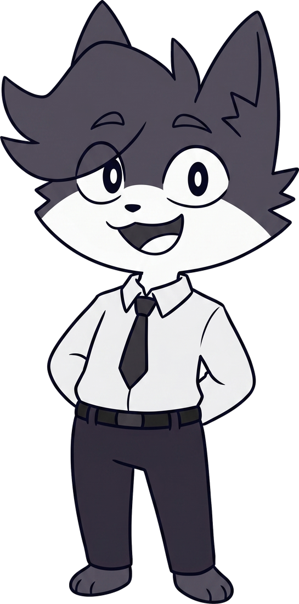

Labs
Ingeniería electrónica embebida, electrónica de potencia y PCB. Del registro al producto.
Entrar a Labs →
Clover Y5 reúne la precisión de la ingeniería y la voz de lo creativo. Labs construye el hardware; Studio le da forma y narrativa.

Ingeniería electrónica embebida, electrónica de potencia y PCB. Del registro al producto.
Entrar a Labs →
Producción audiovisual, identidad y dirección creativa. Donde la señal se vuelve expresión.
Entrar a Studio →
El mismo rigor en dos lenguajes. Labs diseña el hardware y el firmware; Studio le da forma y narrativa.
// Labs
Sistemas embebidos · Electrónica de potencia · Diseño de PCB · IA local
// Studio
Producción audiovisual · Identidad de marca · Motion · Dirección creativa
Una muestra entre Labs y Studio.

Armado de packs 18650 con soldadura por puntos, níquel y balanceo BMS.

Diagnóstico y reparación de controladores de motor sin escobillas.

Ilustración de personaje en el estilo Clover Y5.
Desde una placa a medida hasta una pieza audiovisual.